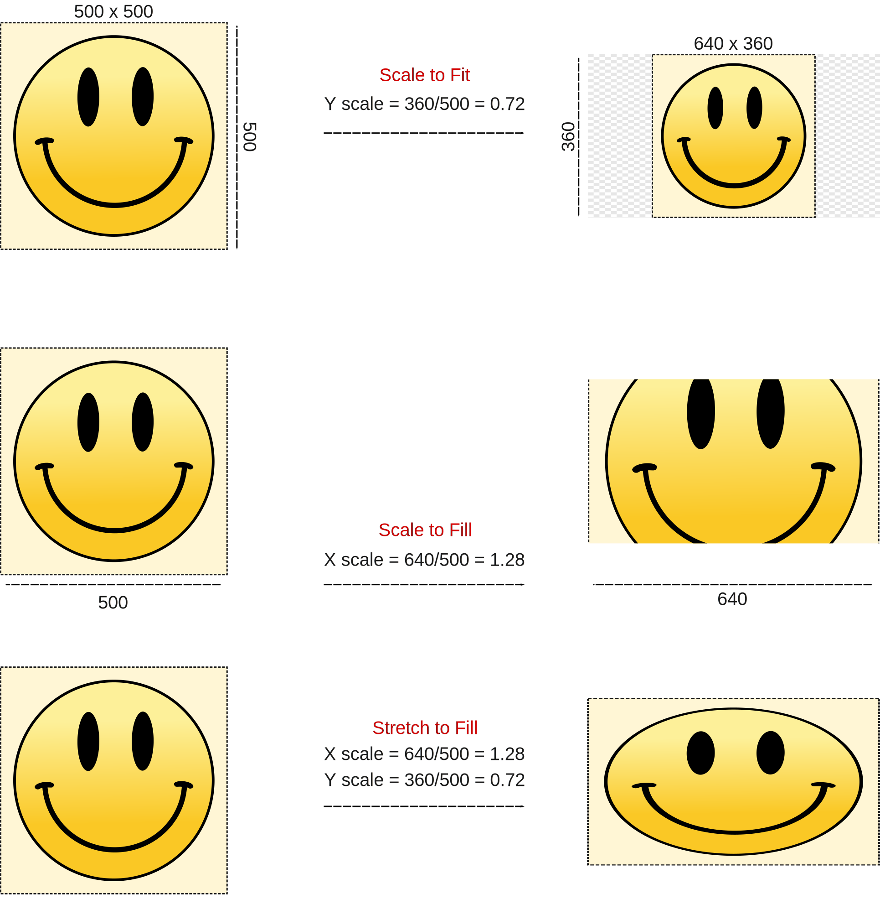

2.2.1.3. Add¶
setting up your project した後、すべての映像を含む整理されたディレクトリが作成されるはずです。 Montage の最初のステップは、これらの footage (ムービーの場面、一部)を import し、サポート ストリップ (テキスト、カラーなど)を Add することです。
2.2.1.3.1. Import¶
注釈
Blender は、最近のすべてのビデオ編集者と同様に、ノンリニア編集 (NLE) システムです。 wikipedia によると、ノンリニア編集は、編集中に元のコンテンツが変更されない、オーディオ、ビデオ、および画像編集のためのオフライン編集の形式です。
映像をインポートするには 3 つの方法がありますが、それらの間には微妙ではあるものの、場合によっては煩わしい違いがあります。 Mikeycal Meyers は、短いビデオ チュートリアルでそれらをデモンストレーションしました。
Blender File Browser を使用して、ビデオ、サウンド、または画像/画像シーケンスをタイムライン上にドラッグします。 Blender ファイル ブラウザは、ビデオ編集ワークスペースの左上のウィンドウです (図 1)。
ショートカット キー (Shift-A) または [Add] メニューにより、ストリップを Blender File View を使って Sequencer のタイムラインに追加し、 目的のファイルを配置します。
オペレーティング システムのファイル ブラウザから、シーケンサーのタイムライン上に目的のビデオ、サウンド、または画像ファイルをドラッグ アンド ドロップします。
図 1: 3 つのインポート方法¶
2番目の Add 方法を使用した場合のみ、利用可能なすべてのストリップ タイプを追加できます。他の方法では、ムービー、サウンド、またはイメージ/イメージ シーケンス ストリップの追加のみが可能です。
また、Add による方法のみがインポート オプション ([Scale To Fit] など) を提供します。これらのオプションについては、次のセクションで説明します。
また、複数のファイルをインポートできるのは Add メソッドのみです。複数のファイルを選択できますが (OS ファイル ブラウザと同様に Blender ファイル ブラウザでも)、タイムラインにドロップされるのは 1 つのファイル (最初に選択したファイル) だけです。おそらく同じ理由で、イメージ シーケンスを追加することはできません。
警告
3 つの方法はすべて、他のビデオエディターと比べるとかなり制限されています。
複数のクリップで Add メソッドを使用すると、再生ヘッドの位置から開始してタイムライン上にクリップが順番に配置されます。ただし、クリップを積み重ねたい場合は、クリップを 1 つずつ追加する必要があります。
Playhead の位置にすでにストリップがある場合、Blender は最初の空きチャンネルにストリップを追加します。追加するクリップのチャンネルを選択することはできません。
ストリップをドロップする場所は重要ではありません。 Blender はそれらをPlayheadの位置に挿入します。ただし、(ストリップが挿入されることを期待して) 別のストリップの上またはストリップの間にストリップをドロップしようとしても、何も起こりません。ストリップも追加されていません。 1
ストリップの挿入に使用できるチャンネルは 128 です。 より大きな番号のチャンネルにはスクロールで表示することができあす。したがって、原則として、同時に 128 を超えるストリップを追加することはできません。ただし、メタ ストリップを使用することで、この制限を回避できます。いくつかのストリップを選択して右クリックします。 [Make meta strip] を選択します。ショートカット Ctrl-G 。選択したストリップは 1 つのチャンネルに折りたたまれ、1 チャンネルとしてカウントされます。
他のストリップの前または間にストリップをインポートすることはできません。ただし、シーケンサー内でそれを行うこともできます。 2
ファイル ブラウザのドラッグ方法の場合は、ファイルのアイコンをドラッグする必要があります。名前をドラッグしようとすると、選択操作のみが呼び出されます。 3
これらの制限の一部はアドオンによって解決されます。たとえば、VSE Quick Functions addon に は次のインポート機能が追加されています。 4
Import At Frame: 標準のインポート動作で、新しいシーケンスを再生ヘッドに配置します。
Insert At Frame: 次のシーケンスは、インポートされたシーケンスの長さだけ前方に移動されます。
Cut And Insert At Frame: 現在のフレームのすべてのシーケンスがカットされ、後続のすべてのシーケンスがインポートされたシーケンスの長さだけ前に移動されます。
Import At End: インポートされたシーケンスをタイムラインの最後に配置します。
3点編集方法の実用的ではあるが実験的なバージョンもあります。この方法を使用すると、 ソースクリップを別のプレビューウィンドウ(例えば Movie Clip Editor)にロードでき、 このクリップ内でスクラブし、イン (開始) ポイントとアウト (終了) ポイントを設定できます。 そして、ソースクリップの一部を、様々なオプション(上述の import at frame, insert at frame, ...)を使って、タイムラインにインポートできます。
2.2.1.3.1.1. Options¶
{kind=link}
インポート オプションは 外部ソース(ムービー、サウンド、イメージ/イメージ シーケンス)を持つ strip types of group 2 用です。
- Relative Path
ビデオ ファイルの場所は保存され、Source panel で利用できます。 この場所は、アセットがインポートされる blend ファイルの場所から始まる相対的な場所、またはコンピューターのルート ディレクトリから始まる絶対的な場所にすることができます ( Blender manual を参照)。 もちろん、blend ファイルはすでに保存されており、外部ファイルを別のドライブに置くことはできません。??
- Start Frame
名前が示すように、ムービーの開始フレーム。このフィールドには、再生ヘッドの位置が自動的に入力されます。たとえば、再生ヘッドが位置 0 にある場合は値 0、再生ヘッドが位置 15 にある場合は値 15 です。
- Channel
ストリップを配置するチャンネル。たとえその位置にすでにストリップがあったとしても、塗りつぶされたチャンネルは常に 1 つです。ただし、新しく追加されたストリップは、次に低い、または高い空きチャンネルに配置されます。より多くのチャンネルを表示できる場合でも、チャンネルの最大数は 128 です。
- Replace Selection
現在選択されているストリップを新しいストリップに置き換えます。
課題
[選択範囲を置換] オプションは何も行わないようです。
- Set View Transform
このオプションを有効にすると (デフォルト)、ムービー クリップの最初のインポート時に[View Transform]が標準に設定されます。 [View Transform] プロパティは、 [Properties Editor] > [Rnedering Properties] > [Color Management] パネルあります。 ほとんどのビデオ ファイルは sRGB (=標準) 色空間でエンコードされます。カラー値は 0 から 1 の間で変動することがあります。ただし、3D モデリングの世界では、シーンに追加する光の量に応じて、カラー値は 0 から無限大まで変動する可能性があります。 したがって、別の [View Transform] アルゴリズム (Filmic など) が使用されます。 たとえば、モデリング ワークスペース内でプロジェクトを開始した場合、[View Transform]オプションはデフォルトで Filmic に設定されます。この[View Transfrom]設定が一致しないと、レンダリング時間の大幅な遅延や色の歪みが発生する可能性があります。
- Fit Method
シーン/プロジェクトのサイズは、インポートするムービーまたは画像のサイズと必ずしも一致するとは限りません。 例えば; 500 (w) x 500 (h) のイメージを 640 (w) x 360 (h) のシーンにインポートしたいとします。画像の高さ (500) がシーンの高さ (360) に適合しないことは明らかです。 [Fit Method]は、レンダリング領域内に収まるようにイメージをどのようにスケールするかを決定します。これを行うには、インポートされたイメージの Transform Scale X および Y プロパティを変更します。
- Scale to Fit
ストリップのビジュアル コンテンツは、元のアスペクト比を維持しながら、プロジェクトのサイズ内に正確に収まります。 これは、上記の例 (図 3 も参照) から、画像の高さ (500) がシーンの高さ (360) に正確に収まるように、係数 0.72 (360/500) でスケーリングする必要があることを意味します。この方法では画像の元のアスペクト比を維持する必要があるため、幅も 0.72 で拡大縮小し、透明な垂直バンドを作成する必要があります。
- Scale to Fill
ストリップのビジュアル コンテンツは、元のアスペクト比を維持しながら、プロジェクトのディメンションにまたがります。この例では、シーンの最大寸法 (640) が画像 (500) で満たされる必要があります。したがって、画像は 1.28 (= 640 /500) の係数で X 軸に拡大される必要があります。
これは、元のイメージの一部がレンダリング領域内のコンテンツに適合しなくなったことを意味する可能性があります。
- Stretch to Fill
ストリップのビジュアル コンテンツはプロジェクトのディメンションを埋めます。 他の 2 つの方法とは異なり、Stretch to Fill は元のアスペクト比を維持しないことに注意してください。
これにより、元の画像が歪む可能性があります (図 3 を参照)。
図3 3 つのフィット方法¶
- Sound
ビデオ ファイルに埋め込みオーディオ チャネルが含まれている場合、このオプションを有効にすると、 ムービーのオーディオ トラックを含むサウンド ストリップが追加されます。このオプションを無効にすると、音声のないムービー ストリップのみが追加されます。
- Use Movie Frame Rate
このオプションは、シーンのシーン フレーム レートを、追加されたムービー ファイルにエンコードされたフレーム レートに設定します。プロジェクトとストリップのフレーム レートの不一致が、 オーディオとの synchronizing problems となることがよくあります。新しい Blend ファイルが作成されると、フレームレートはデフォルトで 24 fps に設定されます。このオプションが有効になっていない場合、フレームレート 30 fps のムービーを追加すると、この種の問題が発生します。
Image/Image Sequence ストリップには、[Sound] や [Movie Frame Rate] オプションはありません。 (この文脈では意味をなさないため)。 [Use Placeholders] オプションが追加されます。さらに、サウンド ストリップには [Fit method] オプションがありません。 ただし、[Cache]と[Mono]オプションが追加されます。これらのオプションは、Image Sequence strip と Sound strip のプロパティ リストですでに説明されています 。
2.2.1.3.1.2. タイムラインを整理する¶
長く複雑なタイムラインを扱うのは簡単ではありません。可能な限り効率的に作業するには、何らかの組織が必要です。 「タイムラインを他の人が拾える状態にしておくこと」というアダージョは確かに当てはまります。タイムラインの整理はおそらく非常に個人的なアプローチですが、次のヒントが役立つかもしれません。
Blender VSE では、任意のストリップを任意のチャンネルに配置できます。ただし、多くの編集者は、チャネルを機能バンドにグループ化します。たとえば、チャネル 1 ～ 5: オーディオ、5 ～ 10: ビデオ、11 ～ 15: エフェクトです。各バンド内には、バックグラウンド ミュージック、ナレーション、アンビエント サウンドなどのサブバンドを含めることができます。可能な分類については、 Organize your assets を参照してください。
一部のビデオ編集プログラムは、ビデオと埋め込みオーディオ ストリップをリンクします。もちろん利点は、一方のストリップを移動すると他方のストリップも移動することです。同期の問題が発生する可能性は低くなります。 Blender VSE では、ビデオとオーディオはリンクされていません。回避策はメタ ストリップを使用することですが、これには音波が見えなくなるという欠点があります。 VSQEF アドオンを使用すると、ストリップを親にすることができます。 video tutorial を参照してください。
Blender の VSE は、 "bin" という概念を使用しません。これは、ソース クリップへの参照を保持するためにプロジェクト内にのみ存在する仮想フォルダーです。ただし、複数のシーンを使用することで簡単にエミュレートできます。図 4 では、2 つのシーン (Raw フッテージとラフ カット) が作成されています (スライド 1)。すべてのクリップが Raw Footage シーンのタイムラインに追加されます。アウトライナー (右上のウィンドウ) の表示モードはScenes(スライド 2) に設定されます。アウトライナーでシーンを選択するだけで、両方のシーンのタイムラインを簡単に切り替えることができます (スライド 3)。
図4 "bin"" を作成するには?画像をクリックするか、キーボードの矢印を使用して次のスライドを表示します。
フィクションを制作する場合、次のように映像を整理できます。
Sequence: 一連のシーン。 S・キューブリックは常に8つのシーケンスで自分の物語を語った。
Scene: 1 つの場所で継続的に展開される状況。
Shot: シーン全体またはその一部をカバーするように設定されたカメラ。
Take: ショットを正しく撮るための多くの試みの中から記録されたもの。
2.2.1.3.1.3. Add¶
ショートカット キー Shift-A を使用すると、外部ソースなしでストリップ(テキスト、カラーなど) を追加できます。利用可能なすべてのタイプの詳細な概要については、 Strip types を参照してください。
これらのストリップの配置は、ストリップのインポートと同じルールに従います。
訳注